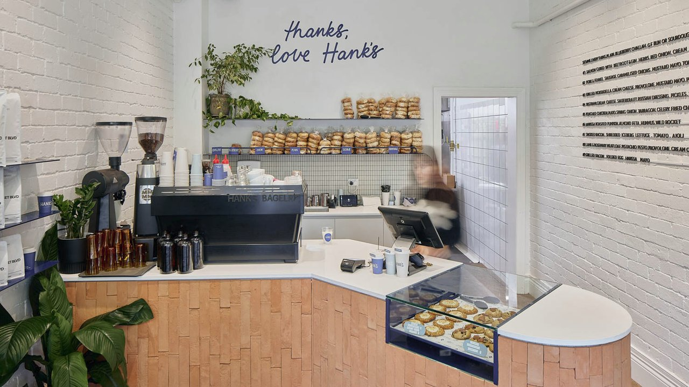

In 2000, our founders Sarah and Marcus Chen had a simple dream: to create a coffee shop that felt like a second home. What started as a small corner café with just four tables has grown into a beloved community institution, but our core values remain unchanged.
We've witnessed countless first dates, business meetings, study sessions, and chance encounters that became lasting friendships. Our walls have absorbed the laughter, the conversations, and the quiet moments of contemplation that make life rich and meaningful.
Today, The Green Bean is more than a coffee shop—it's a testament to what happens when quality, community, and passion come together. We're honored to be part of your daily ritual, and we look forward to serving you for another 26 years and beyond.
